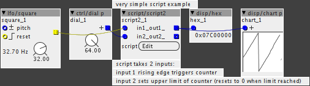

Have been trying to figure out how the script objects work, but there are very little info on them.
Could anyone give example of how they work?
Thanks 

Have been trying to figure out how the script objects work, but there are very little info on them.
Could anyone give example of how they work?
Thanks
a very simple example using script/script2
(doesn't work with script/script)
nothing exciting, but it takes input, does something with it and gives output...

script_example.axp (2.6 KB)
I may as well revive this thread as there doesn't seem to be many others primarily about new users coming to terms with scripts
Can anyone help ? There's no point telling me to do a C course, with a few crumbs i'll be able to hack my way through this and find more solutions myself if i have a starting point of a script i can deconstruct
Sorry if this is obvious to developers
But I don't program in C (which I presume is what the script is formed in)
So i'd like to hack and extend this (abridged below) basic useful utility for usb hosting
if (dev == MIDI_DEVICE_USB_HOST) {
uint8_t status_type = status & 0xF0;
if ((status_type == MIDI_CONTROL_CHANGE) ||
(status_type == MIDI_PITCH_BEND)) {
MidiSend3(MIDI_DEVICE_DIN,0,status,data1,data2); // MidiSend3 needs 3 bytes
} else if (status_type == MIDI_CHANNEL_PRESSURE) {
MidiSend2(MIDI_DEVICE_DIN,0,status,data1); // MidiSend2 needs 2 bytes
}
if (dev == MIDI_DEVICE_USB_HOST) { .....
I get the syntax, but 'dev == MDUH' ? .. what is true here, is it merely that something is plugged in ? , that makes the expression true ? or is it detecting a viable usb class compliant device ? or is it just detecting an input on this port ?
uint8_t status_type = status & 0xF0;
what is happening here, in detail ? .. i know it's an unsigned 8bit int
it looks like you're stating what you expect in the right side, i.e. a status byte and a value
i know how to assemble midi messages, but i'm not sure what's happening here with the & and 240 and what the = is doing
MidiSend3(MIDI_DEVICE_DIN,0,status,data1,data2);
Is the MIDISEND3 a standard C thing or Axo specific ?
how would i have worked out the naming convention for the various ports, i.e. MIDI_DEVICE_DIN, what's the micro USB port called ? Where do i learn about these aspects in the axoloti environment (or is it assumed that you'd be a C user?)
what's the 0 ?
any encouraging words in plain english most welcome
so is this script object just a way to enter C without making an object ?
obviously longer term i'll have to find the right resources to flesh out my own solutions so i'd also be glad to receive any suggestions for resources that are better than others to answer my rudimentary queries
i'm also curious whether there's advantages to a streamlines script compared to a series of objects as building blocks (where possible) ?
the script objects are indeed just simple way to allow you to handle input/output in C without creating a new object... they were available prior to the object editor and embedded object - they have no advantage over objects, in fact they aren't need now. (but need to stay for backwards compatibility)
uint8_t status_type = status & 0xF0;
this is a bitwise and , i.e. we are taking the lower 4 bits. which are the midi message type. (see midi spec)
( I think a decent book on C would be useful for checking syntax like this)
MidiSend3(MIDI_DEVICE_DIN,0,status,data1,data2);
MidiSend3 is a function (has to be due to the brackets), thats defined in the firmware.
it takes, midi device, midi port (not channel!) , the midi status byte and the 2 data values (dependent on midi message, 0 if data 2 is not used)
MIDI_DEVICE_DIN/MIDI_DEVICE_USB_HOST etc are constants (convention is to use uppercase for these, if you look in the xml of the midi objects you will see available ones.
but the most used are:
MIDI_DEVICE_DIN - din connectors
MIDI_DEVICE_USB_HOST - the hosted usb device (i.e the normal usb)
MIDI_DEVICE_USB_DEVICE - the axoloti as a midi device (i.e micro usb)
there are lots of C resources online, that cover everything from syntax to conventions to basic how to, and yes its a prerequisite for creating scripts and objects.
check out this post and if you find some good resources, feel free to add to it. (its a wiki so editable by users with trust level 2 and above)
it means a message has been received from that device, no more, no less 
(we do not currently have an api to detect the presence of a device, or its type etc... it may be added later, but would need a firmware change)
If i'd looked at the & as being an operator i'd have sussed this one out as i know how the midi messages are formed on the back of some of the most significant bits - that makes sense now
plus, a script seems like a better way to do business than to create an object - it makes sharing so much simpler surely
it was just a mysterious proposition until you clarified a few points .. i just need to locate the right axo resources so will explore your points for those definitions
Not really as objects can be shared.
Besides scripts can't define parameters, inlets etc - they really aren't that useful in the generic case, so it's better to just get used to building objects for all scenarios.
 Will look into the patch tonight
Will look into the patch tonight